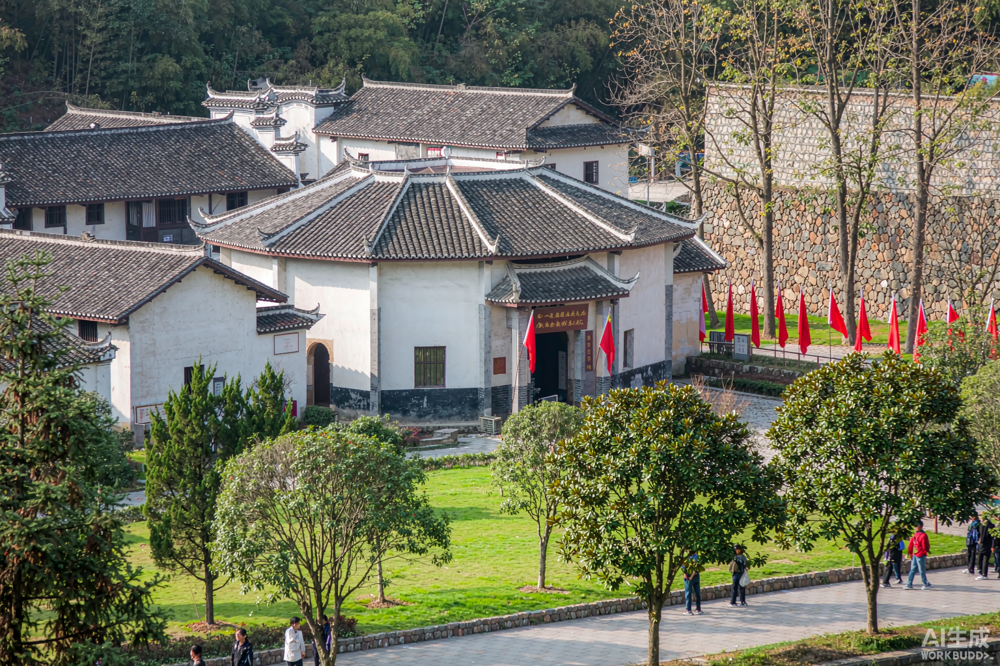
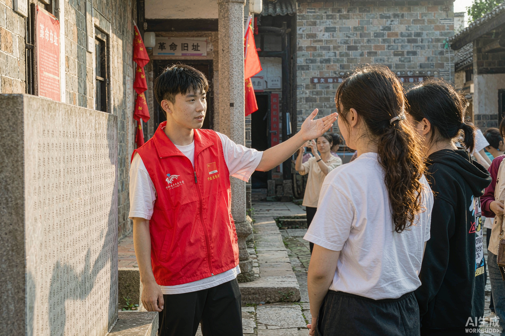
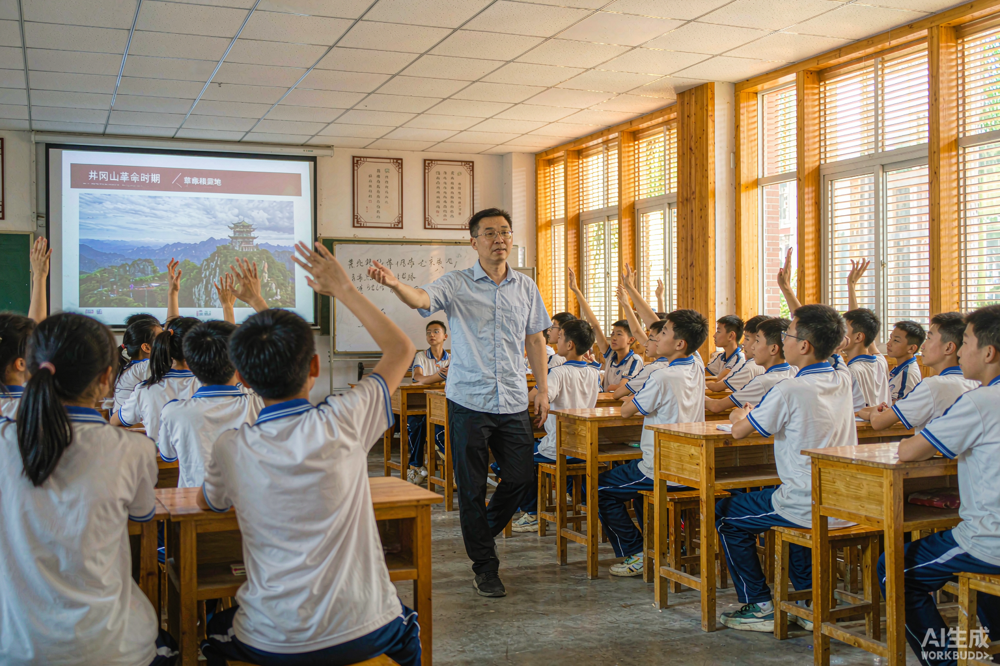

1931 年 11 月 7 日，中华苏维埃共和国临时中央政府在瑞金叶坪宣告成立。 这是中国历史上第一个由劳动人民当家作主的全国性红色政权——人民共和国从这里走来。
五年零八个月，一部治国安邦的预演
中华苏维埃第一次全国代表大会在叶坪谢家祠堂召开，宣告中华苏维埃共和国临时中央政府成立，毛泽东当选主席，瑞金成为"红色故都"。
临时中央政府迁至沙洲坝。毛泽东在此带领军民开挖红井，兴修水利、办学校、建医院，苏区各项事业蓬勃展开。
中华苏维埃第二次全国代表大会在沙洲坝落成的大礼堂举行，毛泽东作报告，发出"关心群众生活，注意工作方法"的号召。
因第五次反"围剿"失利，中央机关从云石山出发，向于都集结——瑞金人民倾其所有支援红军，踏上战略转移的征程。
中央红军长征后，留守苏区的军民坚持游击斗争三年，付出巨大牺牲。瑞金有名有姓的烈士达 1.7 万余人。
走进历史现场 · 全部免费开放

一苏大会旧址、谢家祠堂、红军烈士纪念塔矗立于此。祠堂里那盏马灯照亮过中国第一个红色政权的第一天；纪念塔上嵌满弹壳与石子，铭刻苏区军民的牺牲。

1933 年毛泽东带领军民开挖的水井，井旁石碑刻着"吃水不忘挖井人，时刻想念毛主席"。一口井，照见共产党人"关心群众生活"的初心。

俯瞰呈"红军八角帽"形制的建筑，可容纳 2000 余人。1934 年二苏大会在此召开，礼堂正门的"中华苏维埃共和国临时中央政府"大字仍清晰可见。

中华苏维埃共和国中央政府最后的驻地，因山石嶙峋、云雾缭绕得名。1934 年 10 月，中央机关从这里出发，云石山因此被称为"长征第一山"。
叶坪乡小村庄，43 户人家，17 位青年参军前在蛤蟆岭上每人种下一棵松树。松树亭亭如盖，人再没有回来。如今的华屋新村白墙黛瓦，与岭上青松遥遥相望——最动人的对照。

紧邻二苏大景区，系统陈列中华苏维埃共和国 1131 天的完整历史：一部宪法大纲、一套国家机构、一场经济文化建设——共和国从这里走来。
红军烈士纪念亭、红军检阅台、公略亭与博生堡环绕纪念塔而立，是"第一个首都"的公共生活空间。塔身正对地面的弹孔状碑型，寓意"倒需扶正"的革命信念。
把这些记下来，出发会顺利很多
跨越时空的精神坐标
苏区军民对革命事业矢志不渝，"敌军围困万千重"下红旗始终不倒。
"没有调查，就没有发言权"——毛泽东在苏区深入调研，写下《反对本本主义》。
打井、修渠、办学、分田——苏维埃政府让群众第一次过上"好日子"，所以人民真心拥护。
"苏区干部好作风，自带干粮去办公。"艰苦朴素、清贫奉公，是苏区干部的底色。
兴国等模范县各项工作走在前列，"第一等工作"是苏区干部的自我要求。
扩红运动中"父送子、妻送郎"蔚然成风，瑞金全县 24 万人，参军参战 4.9 万，捐献谷物撑起红军粮仓。
瑞金的红色文化，藏在日常烟火里。红井水至今清冽，游人舀一瓢尝，品的是"饮水思源"四个字；苏区时期的红色歌谣、标语、漫画遍布城乡，"苏区干部好作风"的山歌调子至今在绵江两岸传唱。
这里还诞生了人民军队的第一份报纸、第一所军校、第一个国家银行。毛泽民主持的国家银行以一担银元起家，支撑起红色政权的财政命脉——"共和国摇篮"的含义，正在于国家治理的一切探索都从这里开始。